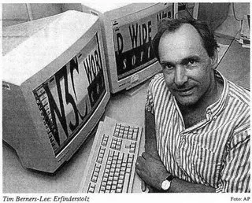
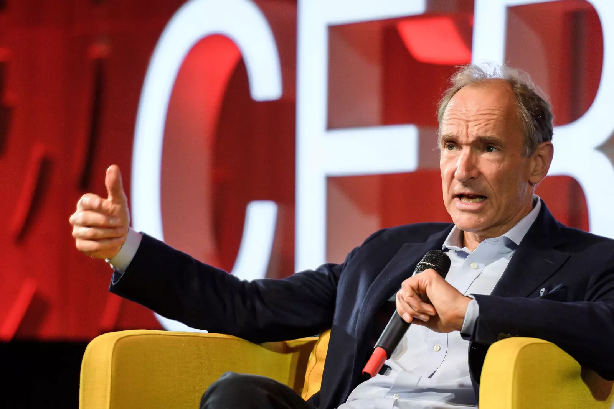

Cientifico de la Computación
Tim Berners-lee
La creacion de W.W.W fue una cuestion puramente accidental... (?)
En marzo de 1989, Tim Berners-Lee presentó una propuesta para un sistema de gestión de la información a su jefe, Mike Sendall. «Vago, pero emocionante», fueron las palabras que Sendall escribió en la propuesta. En el 31 aniversario de la creación de la web, según informa el diario «El País», Ben Segal, uno de los mentores de Tim Berners-Lee en el CERN, comenta que la creación de la web fue una cuestión puramente accidental. Lo que estaba intentando hacer Berners-Lee era vincular la información disponible en varios ordenadores. Ante la poca atención de parte de sus colegas, ya que aquello sólo funcionaba en un tipo de ordenador, un Next fabricado por Steve Jobs, decidió poner allí el listado telefónico del CERN, y esa manera nació la primera página web que cambiaría buena parte del destino del mundo. De este modo el diseño de la WWW permitía un fácil acceso a la información existente y una temprana página web vinculada a información útil para los científicos del CERN (por ejemplo, la guía telefónica del CERN y las guías para utilizar los ordenadores centrales del CERN). Aún hoy día es posible visualizar la primera página info.cern.ch. Tim Berners-Lee escribió la primera propuesta para la World Wide Web en marzo de 1989 y su segunda propuesta en mayo de 1990. Junto con el ingeniero de sistemas belga Robert Cailliau, esto se formalizó como una propuesta de gestión en noviembre de 1990. Desarrolló el código de su servidor web en un ordenador NeXT. Para evitar que se apagara accidentalmente, el ordenador tenía una etiqueta escrita a mano con tinta roja: «This machine is a server. DO NOT POWER IT DOWN!!» (Esta máquina es un servidor. No apagar). Esto esbozó los principales conceptos y definió los términos importantes detrás de la web. El documento describía un «proyecto de hipertexto» llamado «WorldWideWeb» en el que una «web» de «documentos de hipertexto» podía ser vista por «navegadores».a finales de 1990. Berners-Lee tenía el primer servidor y navegador de la web en funcionamiento en el CERN, demostrando sus ideas. La primera dirección de la página Web fue http://info.cern.ch/hypertext/WWW/TheProject.html. La página contenía enlaces a información sobre el propio proyecto WWW, incluyendo una descripción del hipertexto, detalles técnicos para la creación de un servidor Web y enlaces a otros servidores Web a medida que estuvieran disponibles. El servicio de búsqueda se basaba en palabras clave – no había motores de búsqueda en los primeros años.
Proyecto Actual (Inrupt)


Tim Berners-Lee fue crítico con las expectativas generadas alrededor de la Web 2.0 cuando se argumentó sobre esta plataforma que «si la web 1.0 conectaba ordenadores, la web 2.0 conecta personas». Tim opina que no se trata de una nueva generación de web sino una forma diferente y, eso si, mucho más capaz de desplegar aplicaciones sobre la misma plataforma de la web inventado por él.Cuando Tim Berners-Lee creó la World Wide Web (WWW) con Robert Cailliau en 1989 en el CERN de Ginebra, estaba todo por escribir en internet. Aquello le dio a la red una arquitectura y un lenguaje común para todos que seguimos usando hoy: desde el mejor aprovechamiento del hipertexto, la identificación de las urls y, sobre todo, la posibilidad de compartir información de forma mucho más sencilla que hasta entonces. En cierto modo, el invento de la Web supuso humanizar internet.Berners-Lee, ahora a sus 66 años, ha mostrado desde entonces su preocupación sobre el rumbo que estaba tomando la web. Un debate en el que estamos todos: problemas de privacidad y de expresión, control por parte de las compañías más importantes y grandes que jamás hayan existido y también por gobiernos, y el estresor que parece suponer para el ser humano en general un mundo preconizado visualmente por las redes sociales.Ahora Inrupt lanza el primer servidor con el sistema Solid destinado a empresas. Esto abre la puerta a la expansión del proyecto de Berners-Lee a cualquier entidad que decida sumarse. La iniciativa introduce dos novedades principales. Una de ellas es el POD (personal online data), un contenedor digital que almacena los datos personales de un usuario. Cada uno tiene el suyo y tiene la llave para controlar quién accede a la información y a qué parte de ella. Este POD se almacena en la nube de un proveedor —que puede ser la propia Inrupt, la comunidad Solid o incluso el propio usuario— y se comunica con el servidor Solid, la pieza que faltaba.
Tus datos personales en un baul con llave
Inrupt también ha revelado que colabora con el gobierno de Flandes. Esta región belga trabaja en la creación de un POD para cada ciudadano. En él cada uno conservaría sus diferentes documentos personales, como el carné de identidad, el permiso de conducir, el padrón y tantos otros cuya emisión depende de administraciones públicas. “El objetivo es que todo esto esté en mis manos y que cuando tenga que mostrar a alguien mis credenciales pueda tenerlas de forma inmediata. Es como tener una caja con todos mis documentos dentro”, apunta Bruce. La visión de Solid está centrada en el usuario final. Pero su adopción no empieza por este lado de la cadena. “No estamos tratando de ayudar todavía al usuario medio. Primero queremos trabajar con grandes organizaciones para ayudarles con sus usuarios”, señala el CEO de Inrupt. “Tardaremos un poco en construir el sistema de una forma que permita usarlo a mi madre, por ejemplo”. Pese a la matización, desde la startup aseguran que la tecnología está lista para usarse. Afirman que sería capaz de dar cobertura a decenas de miles de usuarios en estos momentos. En esta fase, compañías y desarrolladores tienen que trabajar estrechamente, pues de momento todo son aplicaciones ad hoc. Con todo, Bruce hace un llamamiento para que las empresas empiecen a trabajar con Solid. El primer paso: acudir a la web de Inrupt. Su enfoque choca frontalmente con la visión de Google, Facebook, Amazon y, en general, todos los gigantes digitales que practican análisis exhaustivos de datos personales. Estas compañías trazan perfiles de cada usuario en base a una enorme cantidad de huellas que dejamos en nuestra actividad online. En muchas ocasiones ni siquiera sabemos qué aspectos personales se meten en la coctelera de los algoritmos. El CEO de Inrupt precisa que la diferencia con Solid está en el control que ejerce el usuario. Lo ilustra con el trabajo de la BBC, otro de los socios de la startup. La corporación británica cuenta con un archivo descomunal, audiovisual y radiofónico. Por tamaño resulta inabarcable. Por eso la BBC ha construido aplicaciones para conocer a los usuarios y servirles contenido de su interés. “Tienen un sistema que escucha la música que reproduces en Spotify. Si ve que pones mucho a un artista te ofrece, por ejemplo, un documental sobre este artista que está en el archivo”. La plantilla de Inrupt se compone de unos 30 empleados. Y su comunidad cuenta con cientos de desarrolladores en todo el mundo. En España uno de los núcleos más relevantes nació al calor de la Universidad de Oviedo. Algunas empresas nacionales, como la gijonesa Empathy.co, trabajan desde hace tiempo con Inrupt. Sobre si Solid puede prosperar en un Internet como el de hoy, Bruce se muestra confiado en que Google o Facebook se adaptarán con el tiempo. Y confianza es lo que promete la startup a las compañías que se sumen al proyecto. “Una empresa le dice al usuario: te voy a dar tus datos pero déjame ofrecerte nuevas formas de usar esos datos para darte un valor real”. A cambio se espera que el usuario sea fiel. “Los usuarios confían en la compañía y esta les da valor”, incide Bruce. “Esta es la forma en que Tim [Berners-Lee] imaginó la Web. No es como es ahora pero podría serlo”.
- Una sala de conferencias en el campus central del AOL lleva su nombre.
- El 8 de enero de 2007 fue anunciado como ganador del premio Charles Stark Draper de 2007.
- El 18 de marzo de 2013 recibió el Queen Elizabeth Prize for Engineering en conjunto con otros cuatro ingenieros por su «innovación de vanguardia en ingeniería que ha sido de beneficio global para la humanidad
- El 21 de julio de 2004 recibió el grado honoris causa de Doctor de Ciencia de la Universidad de Lancaster.
- ingenieros por su «innovación de vanguardia en ingeniería que ha sido de beneficio global para la humanidad»-
- La Universidad de Southampton fue la primera en reconocer su contribución para desarrollar la World Wide Web con un grado honoris causa en 1996. También es un distinguido miembro de la British Computer Society, miembro honorífico del Instituto de Ingenieros Eléctricos y de la academia americana de las artes y las ciencias.